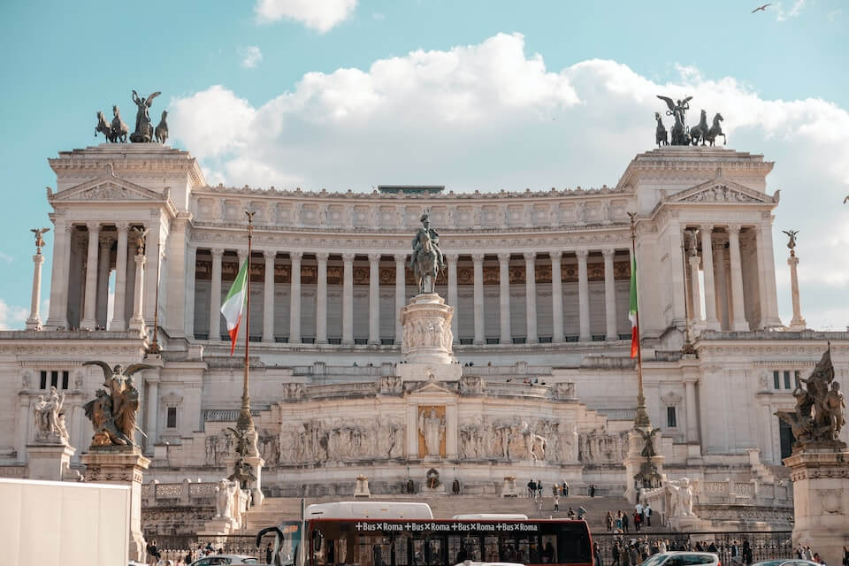

從今天開始探索文藝之都
PIAN PIANO SCOPRIAMOROMA
羅馬
Pian piano 義大利文慢慢來的意思
羅馬有豐富的文化遺產等著我們深度探索
放慢腳步體驗當下 每個轉角都是博物館
探索羅馬
地圖探索
使用地圖工具發掘相鄰景點
更進一步了解羅馬古城區
透過互動地圖探索每個區域
旅遊指南
提供羅馬大眾運輸全攻略
羅馬地鐵/火車/公車/電車
博物館及旅遊套票資訊通
景點資訊
不論熱門或冷門景點全都有
一手掌握景點參觀資訊及導覽
讓旅遊不再走馬看花
行程規劃
收藏你所喜愛的景點
在個人地圖中一目了然
規劃鄰近景點並安排行程
Pian piano Scopriamo Roma Pian piano Scopriamo Roma
Pian piano Scopriamo Roma Pian piano Scopriamo Roma
虛擬導覽
沒有足夠的年假可以做深度旅遊嗎？先等等還不要辭職！
我們結合 Google Map 街景服務
一起探索美麗的文化之都 – 羅馬。
Roma non è stata costruita in un giorno
Roma non è stata costruita in un giorno
Roma non è stata costruita in un giorno
人氣景點TOP 10
Fontana
di Trevi特萊維
噴泉
Fontana
di Trevi特萊維
噴泉
Basilica
di San Pietro聖彼得
大教堂
Foro
Romano古羅馬
廣場
Pantheon萬神殿

Chiesa di Sant'Ivo
alla Sapienza羅馬智慧大學
聖依華堂

Monumento Nazionale
Monumento Nazionale
a Vittorio Emanuele II維托里亞諾
紀念館
Colosseo羅馬
競技場
Museo
Vaticano梵諦岡
博物館
Piazza
di Spagna西班牙
廣場
Castel
Sant'Angelo聖天使
城堡
Scopriamo di più
Scopriamo di più
Scopriamo di più
Scopriamo di più
Scopriamo di più
Scopriamo di più
Scopriamo di più